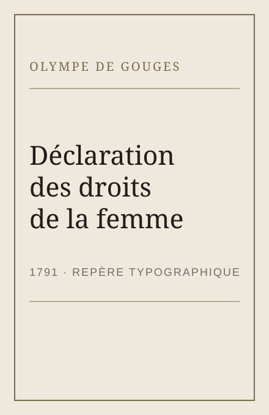
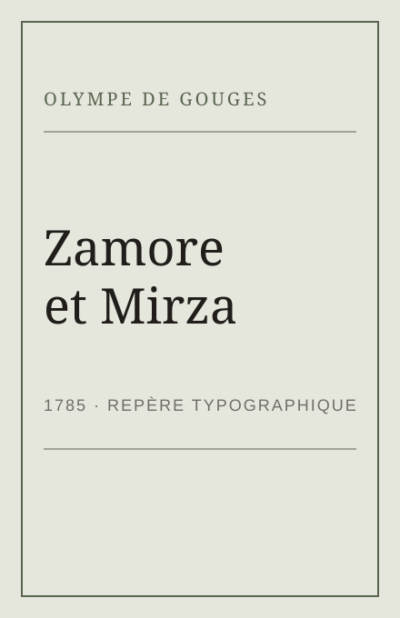
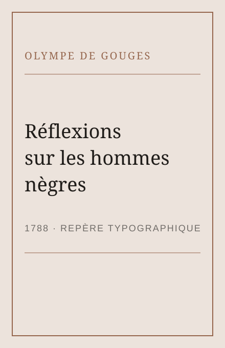

Autrice · 1748–1793
Olympe de Gouges
Autrice de la Déclaration des droits de la femme et de la citoyenne
Publiée en 1791 en réponse à la Déclaration de 1789, son adresse revendique explicitement les droits des femmes et des citoyennes. L’article premier inscrit l’égalité dans un texte de combat politique.
La Femme naît libre et demeure égale à l’homme en droits.
Olympe de Gouges
Déclaration des droits de la femme et de la citoyenne · article I · 1791
Textes choisis


